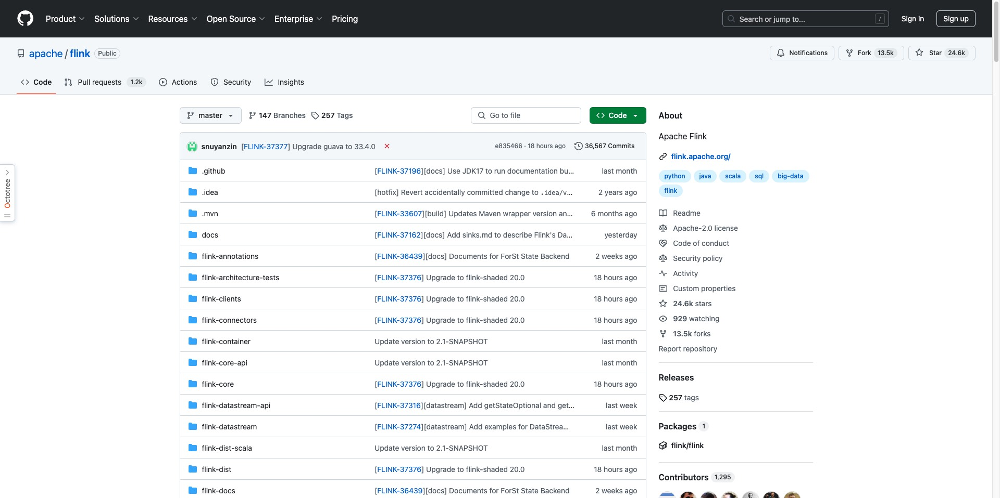
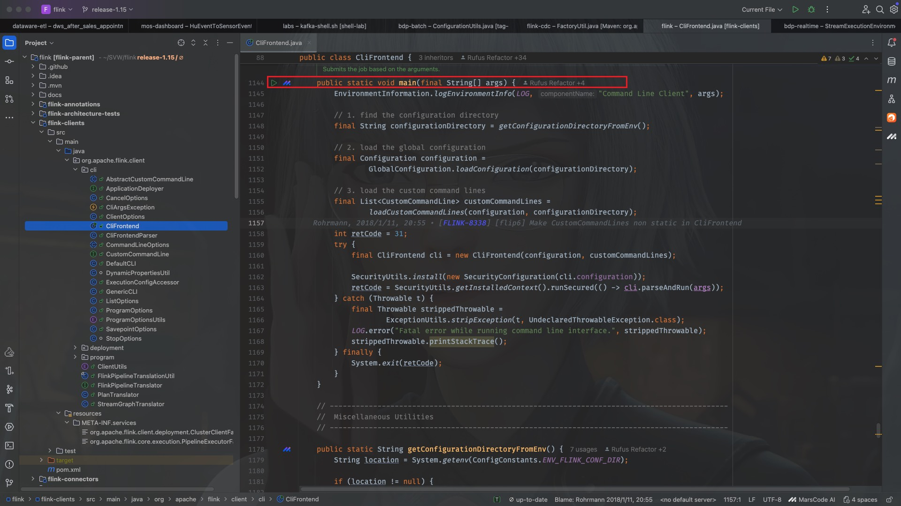
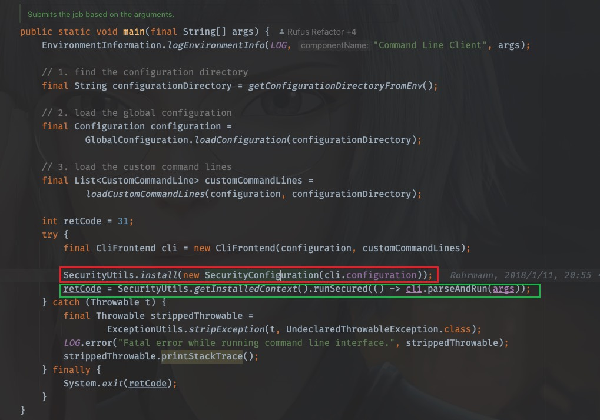
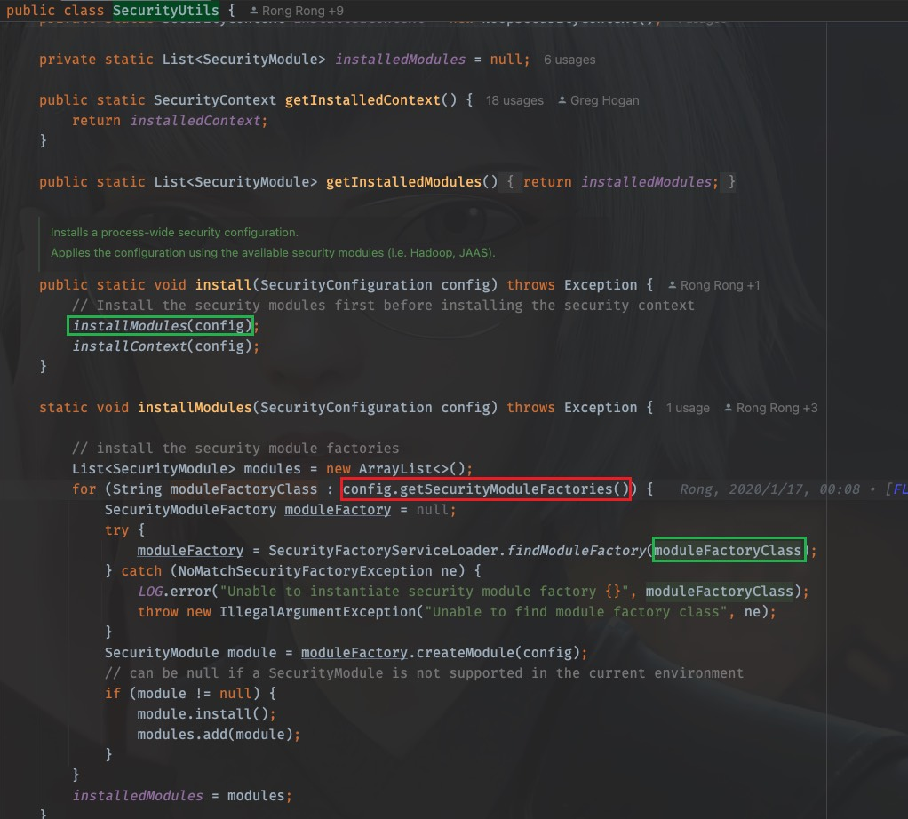
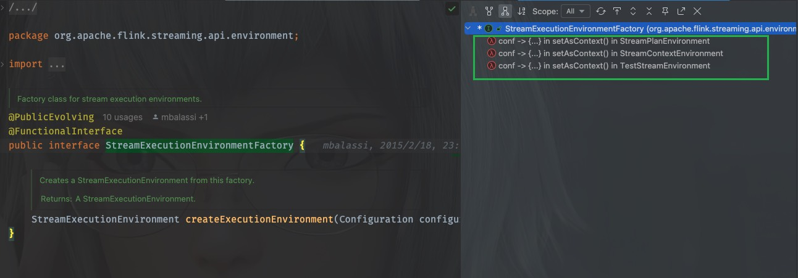
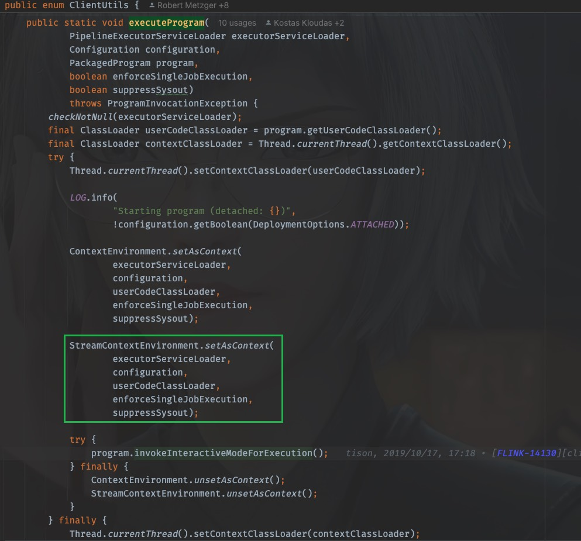
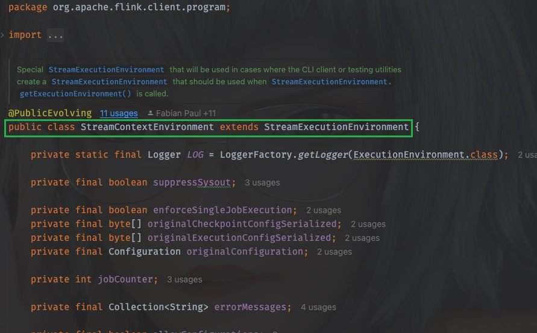

18. [Flink源码]Flink任务是如何启动的
18.1. 背景
最近写了一个Spark任务，任务在启动初始化的时候，需要加载内置在jar内的yml配置中的默认配置，还需要接收并解析用户命令行传入的自定义参数，于是为了适配和统一，定义了很多类来接收参数，管理起来很麻烦、混乱，且不方便使用。于是为了整合那么多参数，且方便调用使用，我准备参考一下Flink是如何管理这些参数的，于是我打开了flink-cdc的项目源码，一顿分析，发现里面引用了很多flink源码，于是我又打开flink源码，又一顿分析，源码特别多，调用关系相当复杂，稍不注意就分析偏了，这也是看源码时正常的情况，后来，就有了这一篇文章。不过不要紧，参数管理的目的，后面接着研究，下面着重从源码分析一下，一个用户写的Flink程序是如何启动的，这也是我第一篇分析源码的文章。
18.2. 准备工作
我们首先打开Flink的开源项目，把代码pull一份到本地(以下分析以1.15版本为例)

假设我们现在已经有了一个jar包，该jar可以通过flink run 或者 run-application去启动
18.3. 启动
正常来说，启动flink任务的脚本可以简化成以下片段，如果你部署的是application模式，那么其中的原理会有不同，因为需要去使用YARN API与YARN打交道，为了方便分析，简化问题的探讨，在此仅分析Client模式
$ ./bin/flink run \
--detached \
./examples/streaming/StateMachineExample.jar
18.4. 脚本入手
拿到了flink的启动命令，我们从flink的启动脚本入手，看脚本都干了些啥，先看bin/flink中的内容：
#!/usr/bin/env bash
################################################################################
# Licensed to the Apache Software Foundation (ASF) under one
# or more contributor license agreements. See the NOTICE file
# distributed with this work for additional information
# regarding copyright ownership. The ASF licenses this file
# to you under the Apache License, Version 2.0 (the
# "License"); you may not use this file except in compliance
# with the License. You may obtain a copy of the License at
#
# http://www.apache.org/licenses/LICENSE-2.0
#
# Unless required by applicable law or agreed to in writing, software
# distributed under the License is distributed on an "AS IS" BASIS,
# WITHOUT WARRANTIES OR CONDITIONS OF ANY KIND, either express or implied.
# See the License for the specific language governing permissions and
# limitations under the License.
################################################################################
target="$0"
# For the case, the executable has been directly symlinked, figure out
# the correct bin path by following its symlink up to an upper bound.
# Note: we can't use the readlink utility here if we want to be POSIX
# compatible.
iteration=0
while [ -L "$target" ]; do
if [ "$iteration" -gt 100 ]; then
echo "Cannot resolve path: You have a cyclic symlink in $target."
break
fi
ls=`ls -ld -- "$target"`
target=`expr "$ls" : '.* -> \(.*\)$'`
iteration=$((iteration + 1))
done
# Convert relative path to absolute path
bin=`dirname "$target"`
# get flink config
. "$bin"/config.sh
if [ "$FLINK_IDENT_STRING" = "" ]; then
FLINK_IDENT_STRING="$USER"
fi
CC_CLASSPATH=`constructFlinkClassPath`
log=$FLINK_LOG_DIR/flink-$FLINK_IDENT_STRING-client-$HOSTNAME.log
log_setting=(-Dlog.file="$log" -Dlog4j.configuration=file:"$FLINK_CONF_DIR"/log4j-cli.properties -Dlog4j.configurationFile=file:"$FLINK_CONF_DIR"/log4j-cli.properties -Dlogback.configurationFile=file:"$FLINK_CONF_DIR"/logback.xml)
# Add Client-specific JVM options
FLINK_ENV_JAVA_OPTS="${FLINK_ENV_JAVA_OPTS} ${FLINK_ENV_JAVA_OPTS_CLI}"
# Add HADOOP_CLASSPATH to allow the usage of Hadoop file systems
exec "${JAVA_RUN}" $JVM_ARGS $FLINK_ENV_JAVA_OPTS "${log_setting[@]}" -classpath "`manglePathList "$CC_CLASSPATH:$INTERNAL_HADOOP_CLASSPATHS"`" org.apache.flink.client.cli.CliFrontend "$@"
直接看最后一句，因为上面无非是加载配置文件，装载配置信息，最后一句exec很显然是执行的内容，是实际做的事儿
可以看到，执行的类是org.apache.flink.client.cli.CliFrontend，这是一个核心突破口，我们打开flink项目源码，找到这个类
18.5. 源码从main()开始
可以看到，该类位于flink-clients这个module下，并且包含了一个main方法，可以肯定，这是flink程序的入口类

main方法中核心做了四件事儿
定位配置目录。找到核心配置文件所在的目录，即
${FLINK_HOME}/conf目录文件加载即配置解析。将配置文件flink-conf.yaml中的内容加载并解析，装载进入
Configuration类中解析命令行参数。获取命令行参数内容，并解析
执行。通过反射调用UserCode的main方法。
下面着重介绍第4步
18.6. security配置
在实际调用SecurityUtils.getInstalledContext().runSecured(() -> cli.parseAndRun(args))去执行job之前，还需要安装环境安全配置
SecurityUtils.install(new SecurityConfiguration(cli.configuration))
安装security模块
安装security上下文

我们进入SecurityUtils中去看看实际进行了什么动作，以Security Module的安装为例，在SecurityUtils中，核心方法是install(SecurityConfiguration config)
/**
* Installs a process-wide security configuration.
*
* <p>Applies the configuration using the available security modules (i.e. Hadoop, JAAS).
*/
public static void install(SecurityConfiguration config) throws Exception {
// Install the security modules first before installing the security context
installModules(config);
installContext(config);
}
static void installModules(SecurityConfiguration config) throws Exception {
// install the security module factories
List<SecurityModule> modules = new ArrayList<>();
for (String moduleFactoryClass : config.getSecurityModuleFactories()) {
SecurityModuleFactory moduleFactory = null;
try {
moduleFactory = SecurityFactoryServiceLoader.findModuleFactory(moduleFactoryClass);
} catch (NoMatchSecurityFactoryException ne) {
LOG.error("Unable to instantiate security module factory {}", moduleFactoryClass);
throw new IllegalArgumentException("Unable to find module factory class", ne);
}
SecurityModule module = moduleFactory.createModule(config);
// can be null if a SecurityModule is not supported in the current environment
if (module != null) {
module.install();
modules.add(module);
}
}
installedModules = modules;
}
一眼看过去，可以看到installModules(SecurityConfiguration config)方法中有一个SecurityFactoryServiceLoader.findModuleFactory(moduleFactoryClass)的方法调用，根据我为数不多的经验可以看出来，这是java的SPI机制，里面一定有ServiceLoader的加载调用
进入SecurityFactoryServiceLoader中，可以看到调用链路是
/** Find a suitable {@link SecurityModuleFactory} based on canonical name. */
public static SecurityModuleFactory findModuleFactory(String securityModuleFactoryClass)
throws NoMatchSecurityFactoryException {
return findFactoryInternal(
securityModuleFactoryClass,
SecurityModuleFactory.class,
SecurityModuleFactory.class.getClassLoader());
}
private static <T> T findFactoryInternal(
String factoryClassCanonicalName, Class<T> factoryClass, ClassLoader classLoader)
throws NoMatchSecurityFactoryException {
Preconditions.checkNotNull(factoryClassCanonicalName);
ServiceLoader<T> serviceLoader;
if (classLoader != null) {
serviceLoader = ServiceLoader.load(factoryClass, classLoader);
} else {
serviceLoader = ServiceLoader.load(factoryClass);
}
List<T> matchingFactories = new ArrayList<>();
Iterator<T> classFactoryIterator = serviceLoader.iterator();
classFactoryIterator.forEachRemaining(
classFactory -> {
if (factoryClassCanonicalName.matches(
classFactory.getClass().getCanonicalName())) {
matchingFactories.add(classFactory);
}
});
if (matchingFactories.size() != 1) {
throw new NoMatchSecurityFactoryException(
"zero or more than one security factory found",
factoryClassCanonicalName,
matchingFactories);
}
return matchingFactories.get(0);
}
既然有了SPI机制，那么一定有一个顶层接口类，才能加载到其实现类，那么这个顶层接口是什么呢？
让我们回退到org.apache.flink.runtime.security.SecurityUtils中，再看一眼调用链路，这个顶层接口的类名其实来自于SecurityConfiguration

那么接下来，我们只要找到这个SecurityConfiguration中是怎么加载的就可以了，回到install方法被调用的地方，
SecurityUtils.install(new SecurityConfiguration(cli.configuration))
可以看到SecurityConfiguration在实例化的时候传入的是配置configuration对象，进入到SecurityConfiguration中，内部构造方法里很清晰地就可以看到对于Module工厂类的传入
public SecurityConfiguration(Configuration flinkConf) {
this(
flinkConf,
flinkConf.get(SECURITY_CONTEXT_FACTORY_CLASSES),
flinkConf.get(SECURITY_MODULE_FACTORY_CLASSES));
}
于是可以看到，对于工厂类的提供使用了可选参数，如果不指定，将会有默认参数，这些定义在org.apache.flink.configuration.SecurityOptions中
public static final ConfigOption<List<String>> SECURITY_CONTEXT_FACTORY_CLASSES =
key("security.context.factory.classes")
.stringType()
.asList()
.defaultValues(
"org.apache.flink.runtime.security.contexts.HadoopSecurityContextFactory",
"org.apache.flink.runtime.security.contexts.NoOpSecurityContextFactory")
.withDescription(
"List of factories that should be used to instantiate a security context. "
+ "If multiple are configured, Flink will use the first compatible "
+ "factory. You should have a NoOpSecurityContextFactory in this list "
+ "as a fallback.");
public static final ConfigOption<List<String>> SECURITY_MODULE_FACTORY_CLASSES =
key("security.module.factory.classes")
.stringType()
.asList()
.defaultValues(
"org.apache.flink.runtime.security.modules.HadoopModuleFactory",
"org.apache.flink.runtime.security.modules.JaasModuleFactory",
"org.apache.flink.runtime.security.modules.ZookeeperModuleFactory")
.withDescription(
"List of factories that should be used to instantiate security "
+ "modules. All listed modules will be installed. Keep in mind that the "
+ "configured security context might rely on some modules being present.");
对于Security Context的装配配置也是类似
18.7. RUN
一切准备工作做好，接下来就是实际执行用户的代码了
SecurityUtils.getInstalledContext().runSecured(() -> cli.parseAndRun(args))
进入到parseAndRun(org.apache.flink.client.cli.CliFrontend#parseAndRun)中，
/**
* Parses the command line arguments and starts the requested action.
*
* @param args command line arguments of the client.
* @return The return code of the program
*/
public int parseAndRun(String[] args) {
// check for action
if (args.length < 1) {
CliFrontendParser.printHelp(customCommandLines);
System.out.println("Please specify an action.");
return 1;
}
// get action
String action = args[0];
// remove action from parameters
final String[] params = Arrays.copyOfRange(args, 1, args.length);
try {
// do action
switch (action) {
case ACTION_RUN:
run(params);
return 0;
case ACTION_RUN_APPLICATION:
runApplication(params);
return 0;
case ACTION_LIST:
list(params);
return 0;
case ACTION_INFO:
info(params);
return 0;
case ACTION_CANCEL:
cancel(params);
return 0;
case ACTION_STOP:
stop(params);
return 0;
case ACTION_SAVEPOINT:
savepoint(params);
return 0;
case "-h":
case "--help":
CliFrontendParser.printHelp(customCommandLines);
return 0;
case "-v":
case "--version":
......
return 1;
}
} catch (CliArgsException ce) {
return handleArgException(ce);
}
......
}
到这里，剧情就变得熟悉起来，看到ACTION_RUN,ACTION_RUN_APPLICATION等分支，很自然可以想到命令行启动程序时传入的action参数，按照本文开头说的，我们进入到ACTION_RUN分支中，一探究竟
/**
* Executions the run action.
*
* @param args Command line arguments for the run action.
*/
protected void run(String[] args) throws Exception {
LOG.info("Running 'run' command.");
final Options commandOptions = CliFrontendParser.getRunCommandOptions();
final CommandLine commandLine = getCommandLine(commandOptions, args, true);
// evaluate help flag
if (commandLine.hasOption(HELP_OPTION.getOpt())) {
CliFrontendParser.printHelpForRun(customCommandLines);
return;
}
final CustomCommandLine activeCommandLine =
validateAndGetActiveCommandLine(checkNotNull(commandLine));
final ProgramOptions programOptions = ProgramOptions.create(commandLine);
final List<URL> jobJars = getJobJarAndDependencies(programOptions);
final Configuration effectiveConfiguration =
getEffectiveConfiguration(activeCommandLine, commandLine, programOptions, jobJars);
LOG.debug("Effective executor configuration: {}", effectiveConfiguration);
try (PackagedProgram program = getPackagedProgram(programOptions, effectiveConfiguration)) {
executeProgram(effectiveConfiguration, program);
}
}
直接看最后一行，executeProgram(effectiveConfiguration, program)触发执行就在于此，那么上面的代码根据方法命名可以猜到，同样是在做准备工作，配置加载，参数校验，顺着executeProgram我们找到它实际执行的动作，摘掉它一层层的面纱
//org.apache.flink.client.cli.CliFrontend#executeProgram
protected void executeProgram(final Configuration configuration, final PackagedProgram program)
throws ProgramInvocationException {
ClientUtils.executeProgram(
new DefaultExecutorServiceLoader(), configuration, program, false, false);
}
//org.apache.flink.client.ClientUtils#executeProgram
public static void executeProgram(
PipelineExecutorServiceLoader executorServiceLoader,
Configuration configuration,
PackagedProgram program,
boolean enforceSingleJobExecution,
boolean suppressSysout)
throws ProgramInvocationException {
checkNotNull(executorServiceLoader);
final ClassLoader userCodeClassLoader = program.getUserCodeClassLoader();
final ClassLoader contextClassLoader = Thread.currentThread().getContextClassLoader();
try {
Thread.currentThread().setContextClassLoader(userCodeClassLoader);
LOG.info(
"Starting program (detached: {})",
!configuration.getBoolean(DeploymentOptions.ATTACHED));
ContextEnvironment.setAsContext(
executorServiceLoader,
configuration,
userCodeClassLoader,
enforceSingleJobExecution,
suppressSysout);
StreamContextEnvironment.setAsContext(
executorServiceLoader,
configuration,
userCodeClassLoader,
enforceSingleJobExecution,
suppressSysout);
try {
program.invokeInteractiveModeForExecution();
} finally {
ContextEnvironment.unsetAsContext();
StreamContextEnvironment.unsetAsContext();
}
} finally {
Thread.currentThread().setContextClassLoader(contextClassLoader);
}
}
看到program.invokeInteractiveModeForExecution()，再进去看看干了什么，
/**
* This method assumes that the context environment is prepared, or the execution will be a
* local execution by default.
*/
public void invokeInteractiveModeForExecution() throws ProgramInvocationException {
FlinkSecurityManager.monitorUserSystemExitForCurrentThread();
try {
callMainMethod(mainClass, args);
} finally {
FlinkSecurityManager.unmonitorUserSystemExitForCurrentThread();
}
}
有一个callMainMethod(mainClass, args),已经很明显了，接着进去，已经迫不及待了！
private static void callMainMethod(Class<?> entryClass, String[] args)
throws ProgramInvocationException {
Method mainMethod;
......
try {
mainMethod = entryClass.getMethod("main", String[].class);
} catch (NoSuchMethodException e) {
......
}
try {
mainMethod.invoke(null, (Object) args);
} catch (IllegalArgumentException e) {
......
}
}
源码可以看到做了很多的对于入口类、main方法限定关键字的校验，是否是public，是否是static，一切校验通过，就可以invoke了
到此，即执行了用户代码的main方法
18.8. StreamExecutionEnvironment
此时，用户代码中一般使用StreamExecutionEnvironment.getExecutionEnvironment()来获得一个流执行环境
StreamExecutionEnvironment sEnv = StreamExecutionEnvironment.getExecutionEnvironment();
那么当执行StreamExecutionEnvironment.getExecutionEnvironment()的时候都干了什么呢？
让我们进入到StreamExecutionEnvironment(org.apache.flink.streaming.api.environment.StreamExecutionEnvironment)中一探究竟，找到调用链路
//org.apache.flink.streaming.api.environment.StreamExecutionEnvironment#getExecutionEnvironment()
public static StreamExecutionEnvironment getExecutionEnvironment() {
return getExecutionEnvironment(new Configuration());
}
//org.apache.flink.streaming.api.environment.StreamExecutionEnvironment#getExecutionEnvironment(org.apache.flink.configuration.Configuration)
public static StreamExecutionEnvironment getExecutionEnvironment(Configuration configuration) {
return Utils.resolveFactory(threadLocalContextEnvironmentFactory, contextEnvironmentFactory)
.map(factory -> factory.createExecutionEnvironment(configuration))
.orElseGet(() -> StreamExecutionEnvironment.createLocalEnvironment(configuration));
}
可以看到，这里使用工厂类StreamExecutionEnvironmentFactory(org.apache.flink.streaming.api.environment.StreamExecutionEnvironmentFactory)
来构造我们需要的StreamExecutionEnvironment，步骤是
1、先得到工厂类
2、调用工厂类的createExecutionEnvironment方法
3、如果没找到工厂，则调用createLocalEnvironment方法，创建一个本地运行环境
接下来，只要找到工厂类的“诞生”的位置就OK了
18.9. StreamExecutionEnvironmentFactory
进入到StreamExecutionEnvironmentFactory(org.apache.flink.streaming.api.environment.StreamExecutionEnvironmentFactory)中，使用快捷键control + H(macOS, windows不详)调出实现类，可以看到有3个使用了lambda表达式的实现类

凭着大数据直觉，我们选第二个进去，此时我们来到了一个叫StreamContextEnvironmentorg.apache.flink.client.program.StreamContextEnvironment的类中，并且进入到方法org.apache.flink.client.program.StreamContextEnvironment#setAsContext中，还记得吗，这个方法很熟悉！
什么？不熟悉？没关系，看了这么多代码一定脑子懵懵的，我们慢慢接着分析~
其实这个方法就在上面的executeProgram方法中有过调用：

先看看这个方法干了啥：
public static void setAsContext(
final PipelineExecutorServiceLoader executorServiceLoader,
final Configuration configuration,
final ClassLoader userCodeClassLoader,
final boolean enforceSingleJobExecution,
final boolean suppressSysout) {
StreamExecutionEnvironmentFactory factory =
conf -> {
final List<String> errors = new ArrayList<>();
final boolean allowConfigurations =
configuration.getBoolean(
DeploymentOptions.ALLOW_CLIENT_JOB_CONFIGURATIONS);
if (!allowConfigurations && !conf.toMap().isEmpty()) {
conf.toMap()
.forEach(
(k, v) ->
errors.add(
ConfigurationNotAllowedMessage
.ofConfigurationKeyAndValue(k, v)));
}
Configuration mergedConfiguration = new Configuration();
mergedConfiguration.addAll(configuration);
mergedConfiguration.addAll(conf);
return new StreamContextEnvironment(
executorServiceLoader,
mergedConfiguration,
userCodeClassLoader,
enforceSingleJobExecution,
suppressSysout,
allowConfigurations,
errors);
};
initializeContextEnvironment(factory);
}
和你想的一样，实例化一个StreamExecutionEnvironmentFactory，但是，你发现没？lambda表达式中，return的是一个StreamContextEnvironment对象，不是我们要的工厂呀！咋回事？
别慌~

看见没，StreamContextEnvironment继承了StreamExecutionEnvironment，即StreamContextEnvironment就是我们苦苦寻找的StreamExecutionEnvironment，
但是细心地你又问了，刚才的代码段中左边是工厂类，右边是一段lambada表达式，但是lambada表达式返回的却不是工厂类啊，那是实实在在的StreamContextEnvironment呀，咋回事儿？
哈哈，事情变得有趣起来。
让我们再回去看看那个工厂类，这会眼睛睁大点看清楚了：
/** Factory class for stream execution environments. */
@PublicEvolving
@FunctionalInterface
public interface StreamExecutionEnvironmentFactory {
/**
* Creates a StreamExecutionEnvironment from this factory.
*
* @return A StreamExecutionEnvironment.
*/
StreamExecutionEnvironment createExecutionEnvironment(Configuration configuration);
}
这个工厂类使用了一个注解@FunctionalInterface,这就是大名鼎鼎的函数式注解，工厂类只有一个需要实现的方法，那么lambda表达式就可以直接实现该接口，因此
Lambda 表达式 conf -> { ... } 实际上实现了 createExecutionEnvironment 方法，而返回的 StreamContextEnvironment 是 StreamExecutionEnvironment 的子类，因此类型完全兼容。这是延迟绑定特性。
由此产生出了一个新话题：这里的工厂类为什么要这么写？延迟绑定有什么好处？和普通的使用时再手动构造工厂再创建实例有什么区别？
这里不做解答，也是对我自己的一个提醒，提醒我自己在看到这个问题时，都要去再搜索一遍该问题的答案，以加深印象。
由此，我们得到了我们需要的StreamExecutionEnvironment，该对象中包含了execute方法，可以用来触发执行整个用户代码所构成的任务的执行。
18.10. 发散话题
上面的分析中得到的是StreamContextEnvironment，但其实还有LocalStreamEnvironment、RemoteStreamEnvironment和TestStreamEnvironment等，这些又是什么时候被激活使用的呢？程序是怎么发现当前处于什么环境的呢？
这里用到了什么设计模式？（询问了deepseek发现使用了工厂模式+策略模式，StreamContextEnvironment使用了工厂模式，加载启动不同的environment则使用了策略模式）
StreamContextEnvironment有什么用？不是已经有了StreamExecutionEnvironment了吗，为什么还需要设计它？
问题留在这里，今后还需要慢慢探索学习flink的精妙之处。